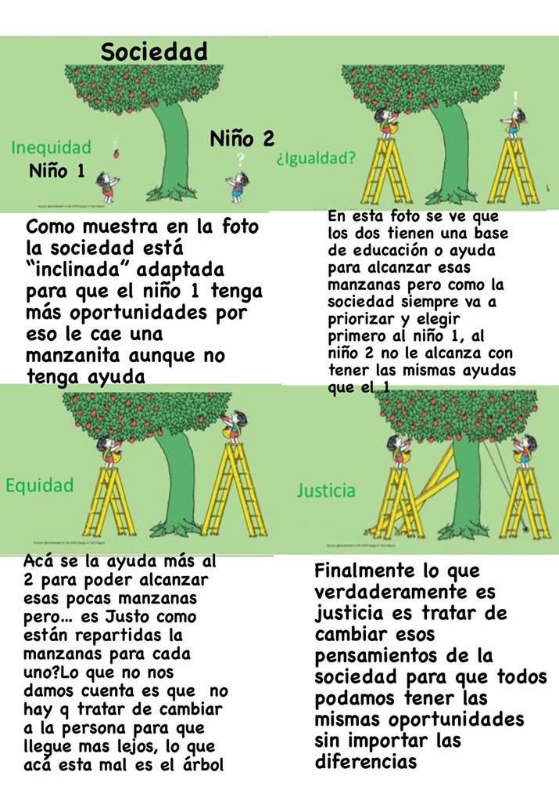

Inclusión de la Diversidad
Alguna vez te preguntaste qué es un lápiz color piel? 🤔
Desde chicos entendemos la vida a partir de colores. Cuando aprendimos a dibujar en el jardín de infantes nos enseñaron que el sol va en amarillo, el cielo va en azul y la gente en color piel. Sin embargo, en la cajita de lápices el color piel era una especie de rosa pálido. Así que incorrecta e inocientemente desde la infancia se nos enseñó que las personas son de un solo color. Esta enseñanza impacta y perdura a lo largo de nuestra vida en nuestra mochila invisible de esteriotipos y conceptos. ¿Pero, cómo podríamos deconstruirnos?
Inclusión de la comunidad LGBTQ+

Para entenderlo mejor un ejemplo: Imaginemos que la primer persona (La del lado izquierdo del arbol desde nuestra perspectiva) es alguien CisGenero (Cisgenero es la persona que se siente identificada con el genero que fue asignada al nacer) , y la segunda (La del lado derecho del arbol desde nuestra perspectiva) es una persona Trans.
Al buscar trabajo las dos personas están educadas, y las dos serían buenas para el trabajo pero al pensar “que dirá la gente si contrato a la persona trans?” “Le tendrán miedo por cómo es?” “Este tipo de personas no tiene que trabajar acá, no es lugar para esta gente” lo que dira la gente o también por pensarlo la persona que contrata deja sin chances a la persona trans, y capaz era mucho mejor en el trabajo pero solo por estos estereotipos la/lo deja sin posibilidades. Y por eso después la gente tampoco se acostumbra a las personas trans porque nunca las ve o porque no los entiende. Las personas trans por estos estereotipos tiene que “esconderse” y conseguir otro tipo de trabajo que es considerado "malo" por la sociedad(como trabajos +18), justamente por esto se quedan con unas pocas "manzanitas"( Manzanitas=Opciones ) y es lo que pueden tener.
Retomando lo que dije antes de que así la gente nunca se va a acostumbrar a ver gente trans porque si no lo normalizamos y no ayudamos para que cada día se vea más nunca se va a lograr.Y es importante hacer este cambio enseñando desde chicos porque si los chicos son educados azul y las chicas rosa claramente después van a terminar pensando que hay que seguir ciertos estereotipos creados por la sociedad.

La gente de esta comunidad tambien a sido denominada "Rarita" o "Anormal" por la gente homofobica, varias personas tienen el pensamiento un tanto fuerte y afirman que la gente de esta comunidad deberia ser aislada de la sociedad, que da asco que se besen en la calle, pero cuando un pareja Cishet (Cis y Hetero) se besan no pasa nada.
La gente Homofobica suele usar la religión como excusa de su homofobia , pero en la religión se consideran pecados otras cosas que esa gente hace dia a dia, otro ejemplo que utilizan son los imanes "Los polos opuestos se atraen", y me gustaria aclarar que son PERSONAS con SENTIMIENTOS no son IMANES obviamente sienten.
Cada uno cree lo que quiera, mientras que exprese su opinion con respeto, sin insultar u ofender los comentarios, si quiere decir algo que no va a aportar nada a la charla/debate que no lo diga ya que podria estar haciendo sentir mal a la gente de esta comunidad.
Ayuda a Personas con discapacidad
Tipos de discapacidad
Es cierto que cada vez hay más normativas tendentes a la integración de las personas con discapacidad, pero también es cierto, que en la mayoría de las ocasiones esa normativa no se cumple. Así, es frecuente ver a personas con discapacidad física que no pueden acceder a ciertos lugares de nuestras ciudades. Otras veces, son las personas ciegas las que tienen problemas para realizar cualquier actividad cotidiana, y son muchas las personas que se preguntan cómo pueden ayudar a título personal.
El consejo fundamental si quieres ayudar puntualmente a una persona con discapacidad es que intentes ponerte en su lugar para saber qué es lo que necesita.